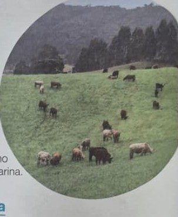

Missão 1 de 6
Base do livro · p. 86 e 87
Missão 1 · Gado no Campo
Onde o gado vive solto em grandes áreas e come nas pastagens?
🌿 Pasto (Extensiva)
🏡 Estábulo (Intensiva)
✓ Muito bem!

Na pecuária extensiva, os animais são criados soltos no pasto.
⭐⭐⭐
Parabéns! Você cuidou da Fazenda 3D!
Você completou todas as missões sobre a criação de animais.
🌿 Pecuária Extensiva
- Gado criado solto em grandes áreas
- Alimentam-se nas pastagens
- Poucos trabalhadores
🏡 Pecuária Intensiva
- Animais confinados no curral/estábulo
- Alimentação específica
- Ordenha mecânica
- Mais trabalhadores